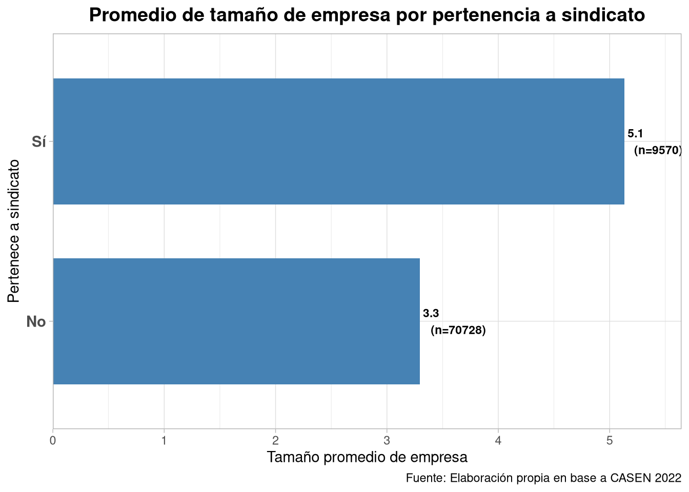
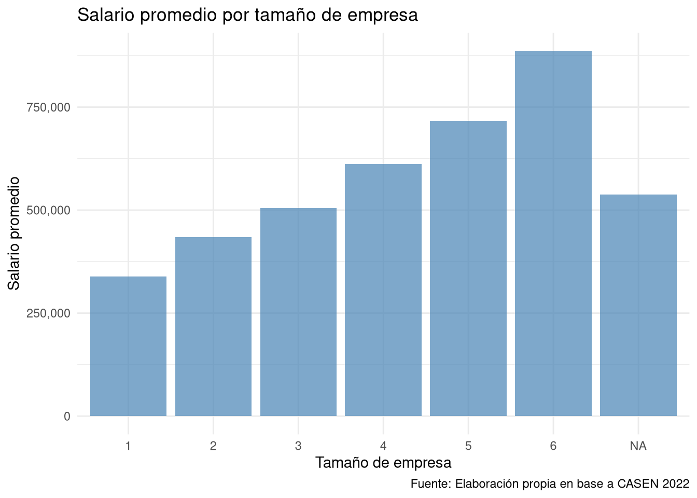
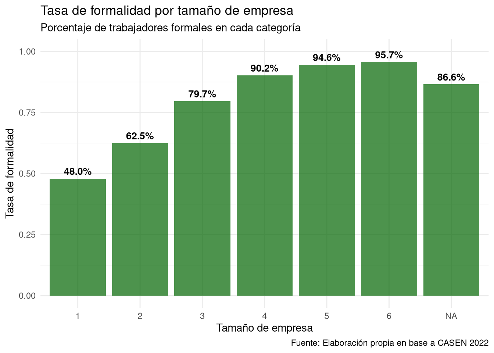

# cargar datos
load("input/data-proc/proc_casen.Rdata")
# cargar librerías
pacman::p_load(tidyverse, # Manipulación datos
sjPlot, # Gráficos y tablas
sjmisc, # Descriptivos
corrplot, # Correlaciones
psych, # Test estadísticos
kableExtra, # Tablas1
sjstats,
haven,
ggplot2,
dplyr,
descr,
report,
broom,
flextable,
rempsyc)
options(scipen = 999) # para desactivar notacion cientifica
# añadir labels
proc_casen$pyme_label <- factor(proc_casen$pyme,
levels = c(0, 1),
labels = c("No PYME", "PYME"))
proc_casen$sindicato_label <- factor(proc_casen$pertenece_sindicato,
levels = c(0, 1),
labels = c("No pertenece", "Pertenece"))
proc_casen$formalidad_label <- factor(proc_casen$formalidad,
levels = c(0, 1),
labels = c("Informal", "Formal"))4 Resultados
4.1 Análisis estadísticos
4.1.1 Hipótesis 1: el tamaño de la empresa está relacionado con la posibilidad de sindicalización.
- \(H_{0}\): \(cor(pertenece_{sindicato}, tamaño_{empresa})\) \(=\) \(0\)
- \(H_{A}\): \(cor(pertenece_{sindicato}, tamaño_{empresa})\) \(\neq\) \(0\)
sjPlot::sjt.xtab(var.row = proc_casen$pyme_label,
var.col = proc_casen$sindicato_label,
show.summary = F,
emph.total = T,
show.row.prc = T,
show.col.prc = T,
var.labels = c("Tipo de Empresa", "Afiliación Sindical")
)| Tipo de Empresa | Afiliación Sindical | Total | |
| No pertenece | Pertenece | ||
| No PYME | 11884 70 % 17.7 % |
5092 30 % 55.5 % |
16976 100 % 22.3 % |
| PYME | 55138 93.1 % 82.3 % |
4080 6.9 % 44.5 % |
59218 100 % 77.7 % |
| Total | 67022 88 % 100 % |
9172 12 % 100 % |
76194 100 % 100 % |
A partir de la tabla de contingencia, se observa que la mayoría de los trabajadores informales trabajan en una PYME, mas exactamente el 90,7% de quienes se encuentran en informalidad. Alrededor de un 18.3% de quienes trabajan en una PYME se encontrarían trabajando informalmente, en comparación al 4.3% en las grandes empresas.
chiq_pyme_sindic <- chisq.test(proc_casen$pyme, proc_casen$pertenece_sindicato)
phi_pyme_sindic <- sjstats::phi(table(proc_casen$pyme, proc_casen$pertenece_sindicato))
tabla_chiq_pyme_sindic <- tidy(chiq_pyme_sindic) %>%
mutate(
p.value = case_when(
p.value < 0.001 ~ "< .001***",
p.value < 0.01 ~ paste0(round(p.value, 3), "**"),
p.value < 0.05 ~ paste0(round(p.value, 3), "*"),
TRUE ~ as.character(round(p.value, 3))
),
phi = phi_pyme_sindic
) %>%
select(statistic, p.value, parameter, phi)
knitr::kable(tabla_chiq_pyme_sindic,
col.names = c("Chi-cuadrado", "p", "Grados libertad", "Phi"),
align = "c")| Chi-cuadrado | p | Grados libertad | Phi |
|---|---|---|---|
| 6649.919 | < .001*** | 1 | 0.2954738 |
Hay una asociación estadísticamente significativa (p < .001) y moderada (phi = 0.295) entre trabajar en una PYME y la pertenencia a un sindicato. Por tanto, con un 95% de confianza se puede rechazar la hipótesis de no asociación entre variables, existiendo evidencia a favor de una asociación significativa entre la pertenencia a un sindicato y trabajar en una PYME.
promedios <- proc_casen %>%
filter(!is.na(pertenece_sindicato)) %>% # Excluir NAs
group_by(pertenece_sindicato) %>%
summarise(
promedio_tamaño = mean(tamaño_empresa, na.rm = TRUE),
n = n()
) %>%
mutate(
categoria = ifelse(pertenece_sindicato == 1, "Sí pertenece", "No pertenece"),
etiqueta = paste0(round(promedio_tamaño, 1), "\n(n=", n, ")")
)
ggplot(promedios, aes(y = reorder(pertenece_sindicato, promedio_tamaño),
x = promedio_tamaño)) +
geom_col(fill = "steelblue", width = 0.7) +
geom_text(aes(label = etiqueta),
hjust = -0.2, size = 3, fontface = "bold") +
labs(title = "Promedio de tamaño de empresa por pertenencia a sindicato",
y = "Pertenece a sindicato",
x = "Tamaño promedio de empresa",
caption = "Fuente: Elaboración propia en base a CASEN 2022") +
theme_light() +
theme(axis.text.y = element_text(size = 11, face = "bold"),
plot.title = element_text(size = 14, face = "bold", hjust = 0.5)) +
scale_x_continuous(expand = expansion(mult = c(0, 0.1))) + # Espacio para el texto
scale_y_discrete(labels = c("1" = "Sí", "0" = "No"))
Al considerar la variable original de tamaño de empresa, de carácter ordinal, nos permite realizar una correlación punto biserial entre ambas variables:
# Realizar correlación punto biserial
cor.test(proc_casen$pertenece_sindicato, proc_casen$tamaño_empresa)
Pearson's product-moment correlation
data: proc_casen$pertenece_sindicato and proc_casen$tamaño_empresa
t = 91.27, df = 76192, p-value < 0.00000000000000022
alternative hypothesis: true correlation is not equal to 0
95 percent confidence interval:
0.3075229 0.3203244
sample estimates:
cor
0.3139379 La asociación entre la pertenencia a un sindicato y el tamaño de empresa es positiva, moderada y estadísticamente significativa (r = 0.31, p < .001). Por tanto, con un 95% de confianza se puede rechazar la hipótesis de no asociación entre variables, existiendo evidencia a favor de una asociación significativa, positiva y moderada entre la pertenencia a un sindicato y trabajar en una PYME. Esto sugiere que la pertenencia a un sindicato esta asociada a mayores tamaños de empresa.
4.1.2 Hipótesis 2: Un mayor tamaño de empresa se relaciona con mayores salarios.
- \(H_{0}\): \(cor(tamaño_{empresa}, salario)\) \(=\) \(0\)
- \(H_{A}\): \(cor(tamaño_{empresa}, salario)\) \(\neq\) \(0\)
test_pyme_salario <- t.test(proc_casen$salario ~ proc_casen$pyme, conf.level = 0.95, alternative = "greater")
stats.table <- tidy(test_pyme_salario, conf_int = T)
nice_table(stats.table, broom = "t.test")Method | Alternative | Mean 1 | Mean 2 | M1 - M2 | t | df | p | 95% CI |
|---|---|---|---|---|---|---|---|---|
Welch Two Sample t-test | greater | 886,124.60 | 574,738.65 | 311,385.94 | 43.11 | 21,885.36 | < .001*** | [299505.89, Inf] |
La prueba t que evalúa la diferencia de medias entre el salario y el trabajo en PYME sugiere que el efecto es positivo y estadísticamente significativo (diferencia = 311,385.94, t = 43.11, p < .001). Por tanto, con un 95% de confianza, se puede rechazar la hipótesis nula sobre la existencia de evidencia a favor de nuestra hipótesis alternativa respecto a que el salario de los sindicalizados es en promedio mayor al de los no-sindicalizados, siendo con 95% de confianza al menos $299,505.89 mayor a los de este ultimo.
cor.test(proc_casen$tamaño_empresa, proc_casen$salario)
Pearson's product-moment correlation
data: proc_casen$tamaño_empresa and proc_casen$salario
t = 65.277, df = 55981, p-value < 0.00000000000000022
alternative hypothesis: true correlation is not equal to 0
95 percent confidence interval:
0.2582420 0.2736375
sample estimates:
cor
0.2659567 La asociación entre el tamaño de empresa y el salario es positiva, pequeña y estadísticamente significativa (r = 0.07, p < .001). Por tanto, con un 95% de confianza se puede rechazar la hipótesis de no asociación entre variables, existiendo evidencia a favor de una asociación significativa entre el tamaño de empresa y el salario. Esto sugiere que el trabajar en una empresa con mas empleados esta asociado a mayores salarios.
# Gráfico de barras con promedios (sin logaritmo)
proc_casen %>%
group_by(tamaño_empresa) %>%
summarise(salario_promedio = mean(salario, na.rm = TRUE)) %>%
ggplot(aes(x = factor(tamaño_empresa), y = salario_promedio)) +
geom_col(fill = "steelblue", alpha = 0.7) +
labs(title = "Salario promedio por tamaño de empresa",
x = "Tamaño de empresa",
y = "Salario promedio",
caption = "Fuente: Elaboración propia en base a CASEN 2022") +
theme_minimal() +
scale_y_continuous(labels = scales::comma)
4.1.3 Hipótesis 3: la formalidad es mayor en empresas mas grandes.
- \(H_{0}\): \(cor(tamaño_{empresa}, formalidad)\) \(=\) \(0\)
- \(H_{A}\): \(cor(tamaño_{empresa}, formalidad)\) \(\neq\) \(0\)
sjPlot::sjt.xtab(var.row = proc_casen$pyme_label,
var.col = proc_casen$formalidad_label,
show.summary = F,
emph.total = T,
show.row.prc = T, # porcentaje fila
show.col.prc = T # porcentaje columna
)| pyme_label | formalidad_label | Total | |
| Informal | Formal | ||
| No PYME | 740 4.3 % 9.3 % |
16598 95.7 % 34 % |
17338 100 % 30.5 % |
| PYME | 7241 18.3 % 90.7 % |
32240 81.7 % 66 % |
39481 100 % 69.5 % |
| Total | 7981 14 % 100 % |
48838 86 % 100 % |
56819 100 % 100 % |
A partir de la tabla de contingencia, se observa que la mayoria de los trabajadores informales trabajan en una PYME, mas exactamente el 90,7% de quienes se encuentran en informalidad. Alrededor de un 18.3% de quienes trabajan en una PYME se encontrarian trabajando informalmente, en comparacion al 4.3% en las grandes empresas.
chiq_pyme_formalidad <- chisq.test(proc_casen$pyme, proc_casen$formalidad)
phi_pyme_formalidad <- sjstats::phi(table(proc_casen$pyme, proc_casen$formalidad))
tabla_chiq_pyme_formalidad <- tidy(chiq_pyme_formalidad) %>%
mutate(
p.value = case_when(
p.value < 0.001 ~ "< .001***",
p.value < 0.01 ~ paste0(round(p.value, 3), "**"),
p.value < 0.05 ~ paste0(round(p.value, 3), "*"),
TRUE ~ as.character(round(p.value, 3))
),
phi = phi_pyme_formalidad
) %>%
select(statistic, p.value, parameter, phi)
knitr::kable(tabla_chiq_pyme_formalidad,
col.names = c("Chi-cuadrado", "p", "Grados libertad", "Phi"),
align = "c")| Chi-cuadrado | p | Grados libertad | Phi |
|---|---|---|---|
| 1974.899 | < .001*** | 1 | 0.1864892 |
Al realizar una prueba de Chi cuadrado, se permite inferir que hay una asociación estadísticamente significativa (p < .001) entre trabajar en una PYME y el trabajo formal, junto con un valor Phi (0.186) que sugiere una asociación pequeña. Por tanto, con un 95% de confianza se puede rechazar la hipótesis de no asociación entre variables, existiendo evidencia a favor de una asociación significativa entre trabajar formalmente y trabajar en una PYME.
Al utilizar una correlación punto biserial entre la formalidad y la variable de tamaño de empresa en la que se basa la variable pyme utilizada anteriormente nos permite observar de manera mas detallada la asociación entre ambas.
cor.test(proc_casen$tamaño_empresa, proc_casen$formalidad)
Pearson's product-moment correlation
data: proc_casen$tamaño_empresa and proc_casen$formalidad
t = 99.566, df = 56817, p-value < 0.00000000000000022
alternative hypothesis: true correlation is not equal to 0
95 percent confidence interval:
0.3784097 0.3924117
sample estimates:
cor
0.3854329 La asociación entre el tamaño de empresa y la formalidad es positiva, moderada y estadísticamente significativa (r = 0.39, p < .001). Por tanto, con un 95% de confianza se puede rechazar la hipótesis de no asociación entre variables, existiendo evidencia a favor de una asociación significativa entre el tamaño de empresa y el salario. Esto sugiere que el trabajar en una empresa con mas empleados esta asociado a mayor informalidad.
# Tasa de formalidad por tamaño de empresa
proc_casen %>%
group_by(tamaño_empresa) %>%
summarise(tasa_formalidad = mean(formalidad, na.rm = TRUE)) %>%
ggplot(aes(x = factor(tamaño_empresa), y = tasa_formalidad)) +
geom_col(fill = "darkgreen", alpha = 0.7) +
geom_text(aes(label = scales::percent(tasa_formalidad, accuracy = 0.1)),
vjust = -0.5, size = 3.5, fontface = "bold") +
scale_y_continuous(labels = scales::percent) +
labs(title = "Tasa de formalidad por tamaño de empresa",
subtitle = "Porcentaje de trabajadores formales en cada categoría",
x = "Tamaño de empresa",
y = "Tasa de formalidad",
caption = "Fuente: Elaboración propia en base a CASEN 2022") +
theme_minimal() +
ylim(0, 1) # Asegura espacio para los textos
4.2 Discusión de resultados
Las hipótesis postuladas al principio de nuestro trabajo se pueden asociar significativamente con los resultados aquí expuestos, con ciertas aristas que requieren una profundización mayor:
1. Relación entre tamaño de empresa y nivel de sindicalización: La evidencia sugiere que existe una asociación moderada entre ambas variables, lo que entrega evidencia para pensar que si existe una diferenciación significativa entre el nivel de sindicalización en PYMEs en contraposición al Gran Empresariado, los trabajadores se organizan más en grandes empresas que en pequeñas empresas por las limitaciones legales impuestas a la negociación por el Plan Laboral. Aunque con el matiz de que esta diferenciación no anula la presencia de sindicatos en empresas pequeñas. La evidencia sugiere que la tesis de Núñez et al. (2025) que plantea que las PYMEs portarían una potencialidad de elevar los niveles de sindicalización está equivocada.
2. Relación entre tamaño de empresa y salario: La relación entre el nivel salarial percibido por la población ocupada en empresas más grandes es débilmente superior al percibido en PYMEs, entregando evidencia a favor de nuestra hipótesis que planteaba una diferenciación, pero su influencia es insuficiente y permite profundizar en el aspecto de que esa brecha no toma la magnitud suficiente como para plantear una “compensación” de la baja productividad por una extracción de plusvalía extraordinaria por sobreexplotación (Espro y Zorattani, 2012; Espro y Baez 2018) como en el caso argentino.
3. Relación entre tamaño de empresa y formalidad: Los resultados indican que las empresas más grandes presentan mayores niveles de formalidad, mientras que las PYMEs concentran una proporción relativamente mayor de empleo informal. Esta dirección de la relación afirma nuestra hipótesis que planteaba que la estructura laboral chilena se caracterizaba por una diferenciación clara pero tenue en la que las PYMEs operan con condiciones contractuales más frágiles, más expuestas a la temporalidad y a vínculos laborales menos estandarizados tal como afirma Ruiz (2013).